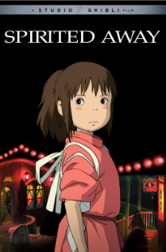
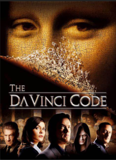
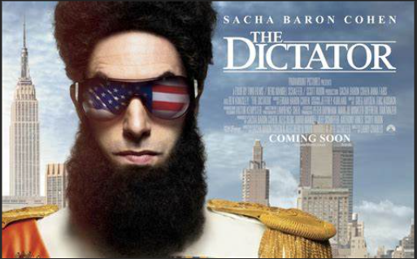

This is the first anime I had seen . It holds a very special place in my memory and my heart
This movie made me interested in history for the first time . The acting of Tom Hanks was splendid.
This movie made me laugh over and over again . It is a perfect combo of dark and funny jokes . It lightens my mood everytime I watch it.
